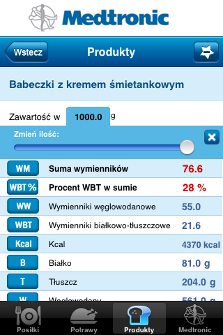
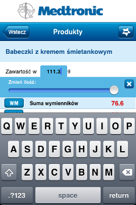

W wielu miejscach w aplikacji możesz zmienić wagę elementu.
Zmiana wagi jest możliwa poprzez suwak oraz ręczne wpisywanie wartości.
Aby zmienić zakres suwaka wagi w aplikacji:
-
Wejdź w zakładkę "Medtronic" i wybierz przycisk ustawień w prawym górnym rogu.
-
Wpisz w pole opisane jako "Maksymalny zakres suwaka wagi" wagę, która będzie maksymalna do ustawienia za pomocą suwaka. Przykładowo, jeśli wpiszesz 1000g zakres suwaka mieścić się będzie między 1g a 1kg.
-
Po zmianie zakres suwaka w aplikacji będzie równy wpisanej przez Ciebie wartości.

-
Pamiętaj!
Jeśli uważasz, że suwak jest za mało precyzyjny, możesz wpisać wagę elementu z klawiatury numerycznej po podwójnym kliknięciu na pole jego wagi.
